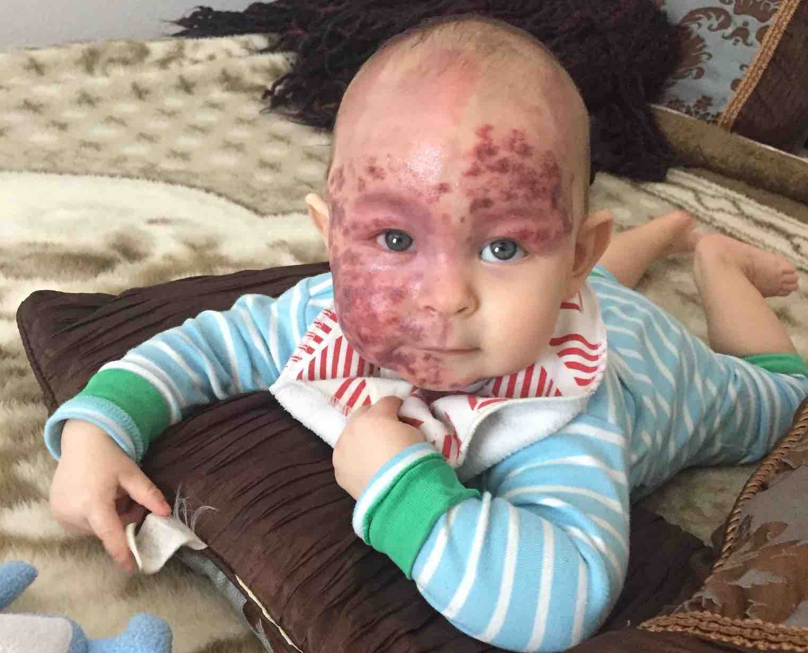

Modern laser treatments can result in a very appreciable clearance of the port wine stain, although much depends on the skin type, the location of the stain, the degree of sun exposure, and the age of the patients. A laser is a device that produces a thin beam of light in which high energies are concentrated. In surgery, lasers can be used to remove certain types of birthmarks without damaging delicate tissue. Imagine a red balloon (the blood vessels) inside a white balloon (the skin). The laser passes through the white balloon, leaving it intact while zapping out the red balloon. The abnormal network of vessels would be destroyed, leaving the normal overlaying tissue and skin surface unscarred.
Before digging deeper in this topic, it will be helpful to familiarize with the following terms:
The pulsed dye laser (PDL), in conjunction with cryogen spray cooling (“dynamic cooling device” or “DCD”), is now the treatment of choice for port wine stain. Multiple pulsed dye laser devices are now available, each with its own unique wavelength and pulse duration. Changing the wavelength or pulse duration of the laser can result in substantial port wine stain fading not previously observed with single device therapy. The most known pulsed dye laser, at the time of writing this page, are known as V-Beam Perfecta and V-Beam Prima (most recent but not widely available yet).
Dermatologists suggest to get the treatments very early and get fairly aggressive in the first year of life. Infants and very young children tend to respond better and more completely. It is still worth to treat patients when they are older, but the impression based upon extensive experience is that younger patients tend to respond quicker and with fewer treatments. Consider that babies can start getting treated even after few weeks after birth (the only limitation may be represented by the emotional discomfort of the parents). Let’s repeat it:
Early intervention (before one year old) results in higher percentage of clearing and within a shorter period of time.
It has also become clear that early treatment of a port wine stain will prevent the development of the hypertrophic component of the lesion (increased tissue mass). Although the majority of port wine stain lesions do not recur, some re-darkening many years later has been reported after successful PDL therapy. Patients who do experience some re-darkening will usually only require one or two treatments to return to their former level of port wine stain blanching.
The frequency of the treatments depends on the age of the patient and the location of the birthmark; ideally, very young babies are treated every two to four weeks unless somebody has darker skin. Spacing out the treatments by few months doesn’t make a huge difference if the patient is still a newborn, infant, or a very young child. If babies or young children need to be put under general anesthesia to receive the treatments, it's recommended an interval of two to three months. For older patients, intervals extend from two to three months.
Typically patients can enter the maintenance mode when, after a series of treatments, there has not been a response to therapy. They can take a break and restart at a later time with either a different device, different parameters, or different treatment techniques. Taking longer breaks actually allows for a better healing.
If the clearance is adequate or complete, and often that happens, there’s no reason to do anything, no maintenance is needed unless the birthmark returns.
When laser treatments seem to not responding any longer or the response is very slow, it’s recommended to look at the parameters of the laser that was used and consider different settings with the same laser. For example, using a larger spot size to achieve a deeper penetration of the laser as well as increase the energy to a point that it’s still safe (meaning it won’t cause scarring). The new generation laser (V-Beam Prima) supports radio-frequency, so that would be another setting to take into account. There’s a number of different variables to choose from, so, make sure that optimal treatment has been administered prior to switching to another type of laser.
Alexandrite or Gentle laser is an option for port wine stain, although not as safe as the PDL when patients are very young. The difference between PDL and Alexandrite is in the wavelength of light. The V-Beam is a PDL and is a yellow light, the Alexandrite is a red light. There’s also a difference in how the light is administered. The V-Beam has a shorter pulse width delivered for a shorter period of time. The Alexandrite is delivered for a longer period of time.
Not all the port wine stains are the same. It is well known that lower extremities (below knees or below elbows) are much more difficult to clear. Experts believe this has to do with the different blood flow in those areas. Also the central portion of the face, such as the nose and the cheeks, is an area the responds much more slowly than the outside of the face, and that's probably due to the different thickness of the skin.
It is possible to treat the eyelids by using eye shields to protect the eye during the course of the treatment. Before placing the eye shield, a topical drop is used to anesthetize the eye, thus allowing a very safe mean to protect it. For some reason many physicians are not comfortable in doing that, but they can be trained! It’s something that has been done for so long and a quite simple procedure.
Particularly in children, laser can affect hair growth. In some instances eyebrows can be treated very conservatively, just so there’s less of a contrast between the eyebrow and the surrounding skin, which is improved often dramatically. A preferable approach, when the port wine stain affects the scalp, is to wait until thickening and nodules start to show and hopefully by then we’ll have technology even more effective.
It is possible to treat the gums with PDL and in some instances it can be helpful. Those patients that present thickening of the gums are better off to view periodontist who might choose either a laser or some type of therapy to reduce it. Lips can be treated externally and internally. Early treatment is important, as lips may grow larger and require surgery to be de-bulked.
Parents get concerned when they observe their kids' skin turning purple after a laser treatment. That’s a natural and expected reaction. It is considered a good end point for port wine stain treatment. Consider that there are instances when babies younger than three or four months don’t get the same purpura as older babies or any purpura at all, but that doesn’t mean they are not getting a response. Another possible outcome of laser treatment is a light burnt smell for a few hours.
 My son after his second treatment. This is how the skin typically appears after a laser surgery with PDL.When patients are very young, the need for general anesthesia is much less. So, an early intervention can prevent to resort to general anesthesia. As kids get older, topical anesthetics can be used, although topical anesthetics can have potential side effects due to absorption into the body, so the amount used has to be carefully limited. There are cases when general anesthesia is required. This has been a debated question for a long time. Based on old studies, the repetitive use of anesthesia might have some impact on the children’s cognitive development or intellectual ability over time, however, it is worth to note that modern anesthetics have improved considerably.
It is recommended to:
It is NOT recommended to:
In very young patients, it’s preferable to treat as early possible and to treat every few weeks if possible. Sometimes with darker skin one has to delay treatment a bit (meaning longer intervals in between a treatment and the next one) and allow for healing particularly if you live in a sunny climate or there might be some sun exposure that might increase pigmentation. It is recommended for patients with darker skin to take a break in the summer, unless it comes to young babies within their first year of life, in that case you don’t want to miss that window of opportunity. For dark skin it’s recommended to use lower energy and avoid very short pulse widths to prevent any increased pigmentation.
The Alexandrite is an option more suitable for adults. Many times, what happens with the port wine stain in adult patients is that their birthmarks get thicker and start developing little nodules. Such nodules are easily treated with a YAG laser. The new generation laser (V-Beam Prima) supports higher energy, larger spots, it’s faster, and adds radio-frequency which could be helpful in clearing some resistant port wine stain.
A lot of things can be done for scarring. Treatments may include specific types of lasers, injections where the scars can be smoothed out quite effectively. Consulting dermatologists or plastic surgeons that have access to these treatments can be helpful.
This topic has been a source of controversy. Sirolimus, also known as Rapamycin, can be compounded in a topical cream to apply after a laser treatment in order to prevent the reconstruction of the blood vessels. Some patients that don’t respond any longer to laser treatments (namely they reached the so called “plateau”) have shown to react well when Sirolimus is applied. This is probably why parents that use it on their kids report different outcomes that go from little to no improvement at all. However, apparently the study behind this active ingredient has a flaw because it doesn’t prove its efficacy in every area of the body affected by the port wine stain.